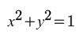
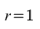
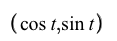
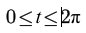
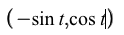
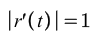
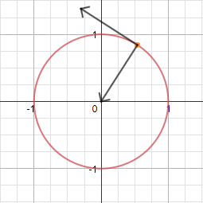
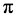
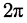

Its Cartesian Form is given by:
In polar coordinates, this is:
Its parametric equations are:
where
Its tangent vector is:
Since its norm is ,
Its unit tangent vector is also:
The derivative of the unit tangent vector (the normal vector) is:

Its norm is also 1, so the unit normal vector is:
The curvature of the unit circle is 1 at any point on the circle.
This parametrization of the unit circle is already a unit speed curve, so there is no need to find an arc length parametrization.
Visualization of vectors on the unit circle:
The area of a unit circle is .
The arc length of the unit circle over the domain is .
Back to Gallery